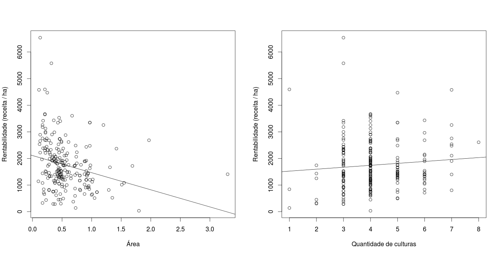
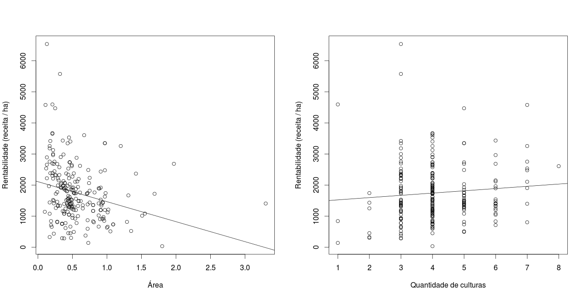

A Embrapa é uma empresa de inovação tecnológica que busca a geração de conhecimento
e ferramentas que impulsionam o setor agropecuário brasileiro.
Em parceria com o Laboratório Analytics da UFCG - Projeto SWResidency, a Embrapa Algodão de Campina Grande
deu o pontapé inicial na criação do Algodoeiro, a primeira ferramenta de analytics no
auxílio a gerência da Embrapa Algodão PB.
Balanço
Cada ponto do gráfico representa o valor da finança de um agricultor e a caixa ao redor dos pontos representa os três valores que dividem o conjunto de finanças dos agricultores da região em quatro partes iguais (primeiro quartil, mediana, terceiro quartil).
Produção por região
Produção por agricultor
Produção dos agricultores
Produtividade dos agricultores
Produtividade dos agricultores comparados por técnicas
O agricultor selecionado está representado pelo ponto vermelho.
Rentabilidade e combinação de culturas
Foi realizada uma análise sobre a influência da combinação de culturas (consórcio) na rentabilidade (receita/ha) do agricultor.
O melhor modelo encotrado relaciona a utilização de três tipos de consórcio, a área e a quantidade de culturas adotadas pelo agricultor no consórcio utilizado.
Esse modelo descreve cerca de 10.22% do conjunto de dados analisado.
Segundo o modelo produzido, a rentabilidade do agricultor é influenciada positivamente pela presença do seguinte consórcio: Algodão, Feijão e Milho, e também
pela quantidade de culturas adotadas no consórcio.
Já os seguintes consórcios: Algodão, Feijão, Melancia e Milho, Algodão, Amendoim, Feijão, Gergelim, Melancia e Milho e a
área influenciam negativamente na rentabilidade do agricultor.
 

Produtividade de algodão e combinações de técnicas
Foi realizada uma análise que buscava descrever a influência que a utilização de conjuntos específicos de técnicas exerciam sobre a produtividade (Kg/ha) de algodão. O estudo foi realizado através da técnicas de regressão linear, onde aproximadamente 40 modelos descritivos foram gerados, neles foram inclusos também dados sobre área de cada agricultor e a cardinalidade do grupos de técnicas adotadas.
Os modelos foram gerados baseados nas seguintes combinações de fatores (primeiramente com todos os dados e depois com a separação por regiões):Ao final da análise dos modelos de regressão concluimos que nenhum modelo foi suficientemente bom para os fins que desejamos.
Curiosidade:
Uma das análises realizadas foi separar os 25% de agricultores que têm maior produtividade e também os 25% de agricultores que detêm menor produtividade.
Após regredir esses dados, nos gráficos dos resíduos dos modelos percebemos um certo padrão de ocorrências. Este fato pode estar relacionado com a não linearidade das relações das métricas utilizadas ou pode ser uma evidência de que há alguma
outra variável influente no modelo mas que, por não a conhecermos, não está sendo utilizada como fator preditor.